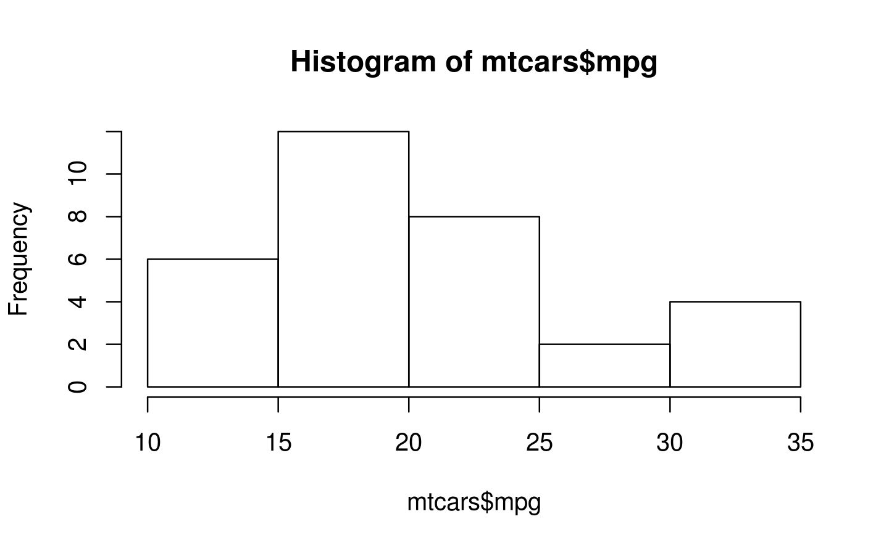
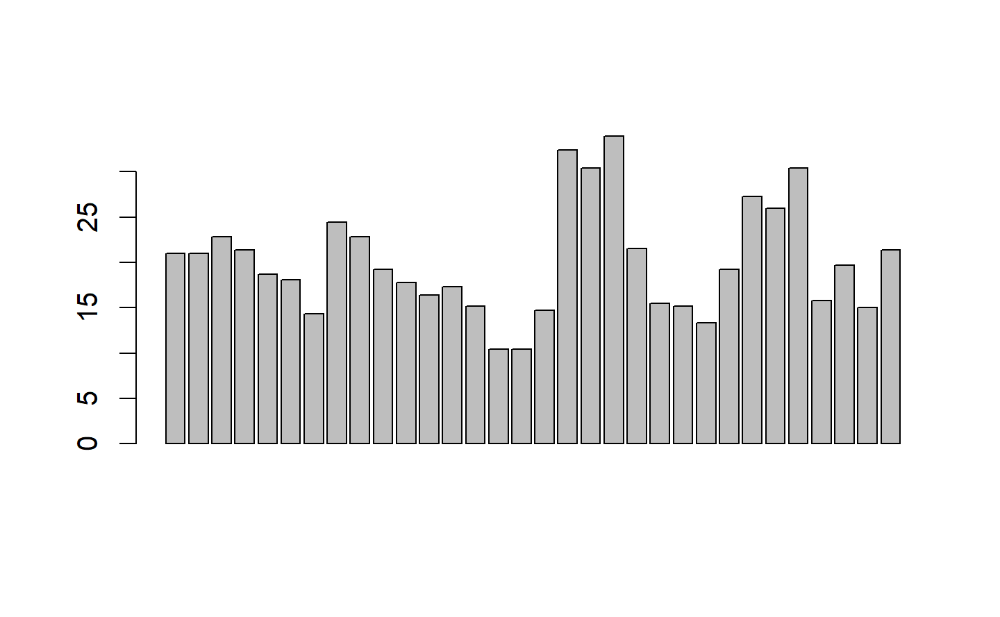
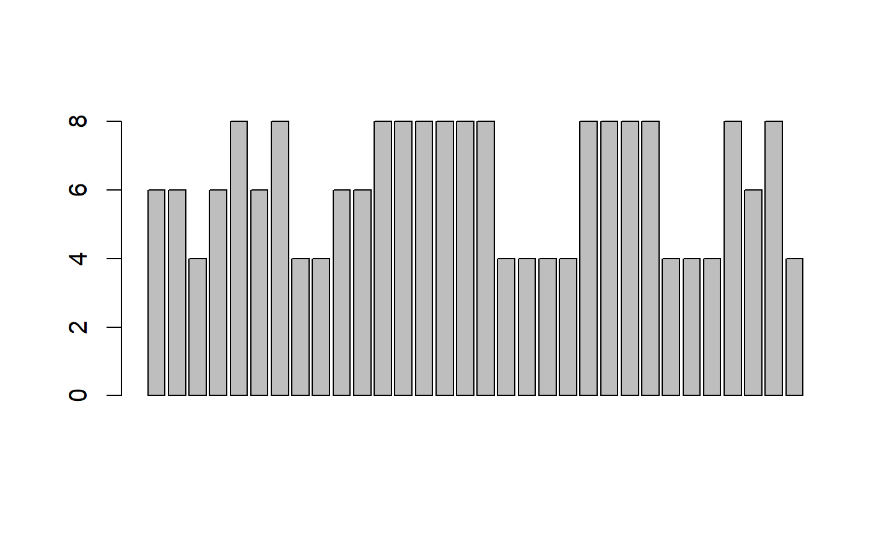

test for class
2020-10-15
Chapter 1 簡介
紀錄這個很難記的語言
1.1 網路資源
1.2 安裝軟體
部份軟體列表 另外於linux 安裝 tidyverse時需要:
sudo apt-get install -y libxml2-dev libcurl4-openssl-dev libssl-devinstall.packages()
# sudo visudo
# 然後加入
# username ALL = NOPASSWD: /fullpath/to/command, /fullpath/to/othercommand
# 下面這個system 需要上面兩行
system('sudo apt update;sudo apt upgrade;sudo apt-get install curl')
system('sudo apt-get install -y libxml2-dev libcurl4-openssl-dev libssl-dev')
install.packages('devtools')
install.packages('bookdown')
install.packages('rlang')
install.packages('tidyr')
install.packages('babynames')
install.packages('ggplot2')
install.packages('sm')
install.packages('bindrcpp')
install.packages('tidyverse')
install.packages('codetools')
install.packages('moments')
library('devtools')
install_github("Hadley/emo")
##
options(repos = c(CRAN = "https://cran.revolutionanalytics.com"))1.2.1 自動update package
update.packages(ask=FALSE) 也可以？
all.packages <- installed.packages()
r.version <- paste(version[['major']], '.', version[['minor']], sep = '')
for (i in 1:nrow(all.packages))
{
package.name <- all.packages[i, 1]
package.version <- all.packages[i, 3]
if (package.version != r.version)
{
print(paste('Installing', package.name))
install.packages(package.name)
}
}** update all available packages **
update.packages()
** update, without prompts for permission/clarification
update.packages(ask = FALSE)
1.2.2 反安裝
在R console中，利用指令 .libPaths()，或者在shell(terminal)中利用 R -e ‘.libPaths()’ 知道套裝被安裝在哪裡，然後可以移除所有的相關套件
Rtools 在windows中安裝完以後，執行
writeLines('PATH="${RTOOLS40_HOME}\\usr\\bin;${PATH}"', con = "~/.Renviron")重啟動，然後測試下面指令
Sys.which("make")1.3 quick view
1.3.0.1 目前有哪些資料集可以測試
data()
attach()
一般是
library(sample)
data("mydata")attach("mydata") 就不用打入mydata$欄位名稱
1.4 幾個常用的統計量:
x<-c(1,2,3)
median(x)
mean(x)
min(x)
sd(x)
range(x)
diff(x)1.5 資料型態和內容
可以先看看資料描述 ?mtcars
mtcars mpg cyl disp hp drat wt qsec vs am gear carb
Mazda RX4 21.0 6 160.0 110 3.90 2.62 16.5 0 1 4 4
Mazda RX4 Wag 21.0 6 160.0 110 3.90 2.88 17.0 0 1 4 4
Datsun 710 22.8 4 108.0 93 3.85 2.32 18.6 1 1 4 1
Hornet 4 Drive 21.4 6 258.0 110 3.08 3.21 19.4 1 0 3 1
Hornet Sportabout 18.7 8 360.0 175 3.15 3.44 17.0 0 0 3 2
Valiant 18.1 6 225.0 105 2.76 3.46 20.2 1 0 3 1
Duster 360 14.3 8 360.0 245 3.21 3.57 15.8 0 0 3 4
Merc 240D 24.4 4 146.7 62 3.69 3.19 20.0 1 0 4 2
Merc 230 22.8 4 140.8 95 3.92 3.15 22.9 1 0 4 2
Merc 280 19.2 6 167.6 123 3.92 3.44 18.3 1 0 4 4
Merc 280C 17.8 6 167.6 123 3.92 3.44 18.9 1 0 4 4
Merc 450SE 16.4 8 275.8 180 3.07 4.07 17.4 0 0 3 3
Merc 450SL 17.3 8 275.8 180 3.07 3.73 17.6 0 0 3 3
Merc 450SLC 15.2 8 275.8 180 3.07 3.78 18.0 0 0 3 3
Cadillac Fleetwood 10.4 8 472.0 205 2.93 5.25 18.0 0 0 3 4
Lincoln Continental 10.4 8 460.0 215 3.00 5.42 17.8 0 0 3 4
Chrysler Imperial 14.7 8 440.0 230 3.23 5.34 17.4 0 0 3 4
Fiat 128 32.4 4 78.7 66 4.08 2.20 19.5 1 1 4 1
Honda Civic 30.4 4 75.7 52 4.93 1.61 18.5 1 1 4 2
Toyota Corolla 33.9 4 71.1 65 4.22 1.83 19.9 1 1 4 1
Toyota Corona 21.5 4 120.1 97 3.70 2.46 20.0 1 0 3 1
Dodge Challenger 15.5 8 318.0 150 2.76 3.52 16.9 0 0 3 2
AMC Javelin 15.2 8 304.0 150 3.15 3.44 17.3 0 0 3 2
Camaro Z28 13.3 8 350.0 245 3.73 3.84 15.4 0 0 3 4
Pontiac Firebird 19.2 8 400.0 175 3.08 3.85 17.1 0 0 3 2
Fiat X1-9 27.3 4 79.0 66 4.08 1.94 18.9 1 1 4 1
Porsche 914-2 26.0 4 120.3 91 4.43 2.14 16.7 0 1 5 2
Lotus Europa 30.4 4 95.1 113 3.77 1.51 16.9 1 1 5 2
Ford Pantera L 15.8 8 351.0 264 4.22 3.17 14.5 0 1 5 4
Ferrari Dino 19.7 6 145.0 175 3.62 2.77 15.5 0 1 5 6
Maserati Bora 15.0 8 301.0 335 3.54 3.57 14.6 0 1 5 8
Volvo 142E 21.4 4 121.0 109 4.11 2.78 18.6 1 1 4 2
head(mtcars) mpg cyl disp hp drat wt qsec vs am gear carb
Mazda RX4 21.0 6 160 110 3.90 2.62 16.5 0 1 4 4
Mazda RX4 Wag 21.0 6 160 110 3.90 2.88 17.0 0 1 4 4
Datsun 710 22.8 4 108 93 3.85 2.32 18.6 1 1 4 1
Hornet 4 Drive 21.4 6 258 110 3.08 3.21 19.4 1 0 3 1
Hornet Sportabout 18.7 8 360 175 3.15 3.44 17.0 0 0 3 2
Valiant 18.1 6 225 105 2.76 3.46 20.2 1 0 3 1
tail(mtcars) mpg cyl disp hp drat wt qsec vs am gear carb
Porsche 914-2 26.0 4 120.3 91 4.43 2.14 16.7 0 1 5 2
Lotus Europa 30.4 4 95.1 113 3.77 1.51 16.9 1 1 5 2
Ford Pantera L 15.8 8 351.0 264 4.22 3.17 14.5 0 1 5 4
Ferrari Dino 19.7 6 145.0 175 3.62 2.77 15.5 0 1 5 6
Maserati Bora 15.0 8 301.0 335 3.54 3.57 14.6 0 1 5 8
Volvo 142E 21.4 4 121.0 109 4.11 2.78 18.6 1 1 4 2
head 前幾筆資料 tail 後幾筆資料
1.5.1 編輯/瀏覽資料
edit(mtcars)
data.entry(mtcars)
View(mtcars)1.5.2 個別欄位
如果要顯示個別欄位,一般可以是mtcars$mpg,但是如果要直接使用mpg欄位,可以利用attach()
attach(mtcars)
mpg [1] 21.0 21.0 22.8 21.4 18.7 18.1 14.3 24.4 22.8 19.2 17.8 16.4 17.3 15.2 10.4
[16] 10.4 14.7 32.4 30.4 33.9 21.5 15.5 15.2 13.3 19.2 27.3 26.0 30.4 15.8 19.7
[31] 15.0 21.4
1.5.3 質性數據的分析
欄位cyl為質性變數,可以利用table分析
table(mtcars$cyl)
4 6 8
11 7 14
頻率圖
barplot(table(mtcars$cyl))
barplot(c(11,7,4))
barplot(mtcars$mpg)
barplot(mtcars$cyl)
1.6 assignment
- <-和 -> 是一對 ，可以向左和向右賦值
- = 是單向的 ，作用和<-基本相同，但對函數中的變數通常使用=
- <<- 這個是全域賦值 ，跟變數的作用域有關，開發自己的套件(package)的時候,常用。
##Delete x (if it exists)
rm(x)Warning in rm(x): 找不到物件 'x'
mean(x = 1:10) #[1] 5.5[1] 5.5
x #Error: object 'x' not foundError in eval(expr, envir, enclos):
找不到物件 'x'
觀察上面的x,第一行指令從環境中去掉變數x的定義。 第2行中的x是在block 中定義，因此執行完以後,會被殺掉。因此第三行指令,出現找不到x的提示。
後面測試<- operator:
mean(x <- 1:10) # [1] 5.5[1] 5.5
x [1] 1 2 3 4 5 6 7 8 9 10
x # [1] 1 2 3 4 5 6 7 8 9 10
This time the x variable is declared within the user workspace. When does the assignment take place ? In the code above, you may be tempted to thin that we “assign 1:10 to x, then calculate the mean.” This would be true for #languages such as C, but it isn ’t true in R. Consider the following function:
a <- 1
f <- function(a) return(TRUE)
f <- f(a <- a + 1);
# 輸出:TRUE
a # 結果=1 [1] 1
注意上面a的值,仍然是1。原因是因為R的編譯器,在最佳化的時候,知道函數中沒用到參數,因此根本沒有存取到變數a,因此，原來的a是甚麼,a仍然是甚麼。
簡單講就是f(a<-a+1)中的a<-a+1 被去掉不會被執行
f(a<-a+1) => f()
rewrite
f <- function(a)
{
if (runif(1) > 0.5) TRUE else a
}
f(a <- a + 1);
a # result 2[1] 2
這個函數f用到了參數a,但是編譯器這次沒那麼聰明,知道使用者用a來做甚麼,雖然這個函數的body仍然沒有動到a,但是這次f(a<-a+1)中的a<-a+1 會被執行。
練習
- 先去掉環境中的變數a,然後在執行上面的chunk.
- hint: rm(a)
f(a <- a + 1);[1] TRUE
# TRUE
a # 2[1] 2
f(a <- a + 1);[1] TRUE
a #3[1] 2
a<-1;
f <- function(a) return(a);
invisible(f(a=a+1))
a[1] 1
invisible(f(a<-a+1))
a[1] 2
上面程式中,invisible函數在這裡的說明不重要,只是用來隱藏計算結果。
a<-1;
f <- function(a) return(3);
invisible(f(a=a+1))
a[1] 1
invisible(f(a<-a+1))
a[1] 1
=用在參數指派 例如
matrix(1:20, ncol = 4) [,1] [,2] [,3] [,4]
[1,] 1 6 11 16
[2,] 2 7 12 17
[3,] 3 8 13 18
[4,] 4 9 14 19
[5,] 5 10 15 20
ncolfunction (x)
dim(x)[2L]
產生5X4矩陣。如果
matrix(1:20, ncol <- 4) [,1] [,2] [,3] [,4] [,5]
[1,] 1 5 9 13 17
[2,] 2 6 10 14 18
[3,] 3 7 11 15 19
[4,] 4 8 12 16 20
ncol[1] 4
會產生一個變數 ncol，這裡產生的為4x5的矩陣。為甚麼?因為這裡的第2個參數ncol<-4,指派給變數ncol,然後這個expression會return 4,而4就被當成第2個參數,也就是matrix(1:20, ncol <- 4)等同於matrix(1:20, 4),也就是指定ROW的維度。
結論:x<-3 <-會在全局產生變數x然後指派3
(x <- 3)[1] 3
#rm(list = ls())
rm(x)
ls()[1] "a" "f" "m" "ncol" "v"
(x = 3)[1] 3
ls()[1] "a" "f" "m" "ncol" "v" "x"
因為x是參數名稱不是變數,看mean help